A First Tour of Whorld
New to Whorld? Start here. Each step builds on the last, from a plain picture to the controls you'd perform with. Allow half an hour, and keep Whorld open beside this page. Download Whorld first if you haven't; the same tour is in the app, under Help > A First Tour of Whorld.
1. What Whorld is
Whorld draws rings: polygons, stars and curved shapes, one inside the next. New rings are born at the center, grow outward and disappear past the edges, so the picture is always flowing. It was made by Chris Korda for sacred geometry and psychedelic visuals: to perform with music, make still images and videos, or simply watch.
Everything about the rings (how many sides they have, how they twist, turn, curve and color) is set by parameters. A set of parameters is a patch, saved as a .whp file, and a list of patches to play is a playlist.
One idea makes Whorld make sense: a parameter changes only the rings born after you change it. The rings already there keep their shape. So a change starts small at the center and spreads outward, ring by ring, like a ripple. Most of Whorld's look comes from this lag.
2. Look around
The first time Whorld opens, it plays the Whorld Samples playlist, made from the sample patches that come with it (in Documents > Whorld > Patches).
- ⌘↓ plays the next patch and ⌘↑ the previous one. Or double-click a patch in the Playlist panel.
- Space pauses and resumes.
- A two-finger swipe up or down over the picture zooms (or turn the mouse wheel). A two-finger tap puts the zoom back.
- Hold the mouse button down on the picture and move it: the rings' center follows.
- ⌘F fills the screen with the picture; Esc comes back.
The window has the picture in the middle and panels around it: Parameters on the left, then the Playlist, Properties, Master and Globals along the bottom. Hover over any control's name for a short explanation.
3. A blank canvas
Choose File > New (⌘N). This is Whorld with nothing changed: five-sided rings, thin lines, slowly cycling colors. Everything that follows starts from here, and you can come back to it any time with ⌘N.
4. Two ways to change a control
In the Parameters panel: drag a slider, or rest the pointer on it and swipe sideways with two fingers. Or click its number box, type a value and press Return.
Over the picture: hold a letter key, keep the pointer on the picture, and swipe up or down with two fingers (or turn the mouse wheel). Up increases. Each letter moves one control, and the bar under the picture names it as soon as you press the key. Press ` (left of 1) to see every key on a keyboard, and again to hide it.
Two things make it safe to experiment:
- Right-click a slider or number box (or tap it with two fingers) to put it back to how the patch started. Over the picture, a two-finger tap while holding a key puts that key's control back.
- Hold ⌥ while swiping to move a third as far, or ⌘ for a tenth; ⇧ moves three times as far.
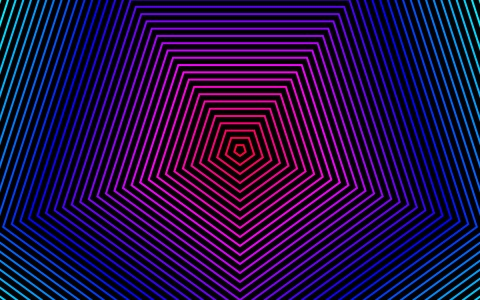
5. Shaping the rings
Change one control at a time, slowly, and watch the change travel outward. Put each one back (right-click) before the next, or keep going and combine them.
Ring Sides (key T)
How many sides each ring has: 3 makes triangles, 4 squares, and up to 50 something close to a circle.
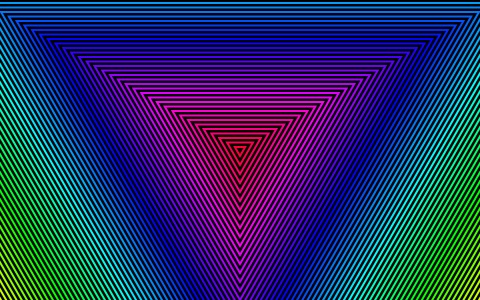
Star Factor (key Y)
Pushes the middle of each side out, or pulls it in, to make stars. At 1 a pentagon becomes a five-pointed star; negative values pull the sides inward.
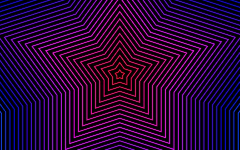
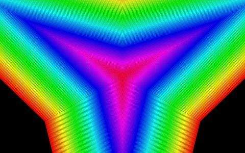
Pinwheel (key U)
Twists the star's points around, like the blades of a pinwheel. It works best with some Star Factor.
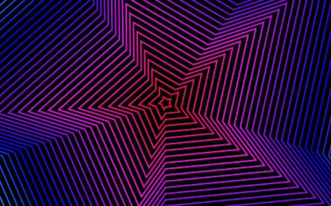
Rotate Speed (key I)
Turns each new ring a little further than the one before, so the rings stack into a spiral. Small values go a long way: try 0.5, and negative values to turn the other way.
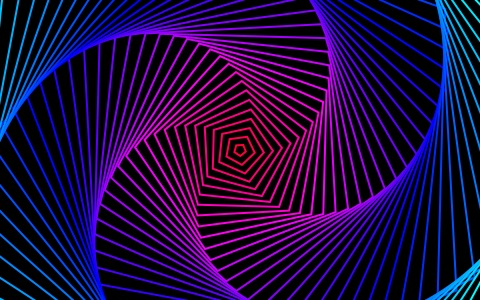
Curves (keys 1 and 2)
Even Curve and Odd Curve bend the corners into curves: positive values round them, negative ones make loops and curls. Even Curve bends the polygon's own corners; Odd Curve bends the star points that Star Factor adds. The Parameters panel lists them after Pinwheel.
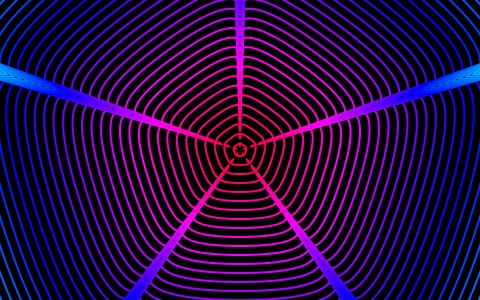
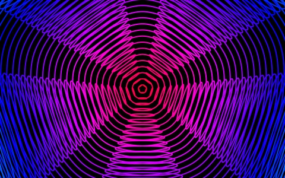
Aspect Ratio (key O)
Stretches the rings: positive values make them wider, negative ones taller. At 1 they're twice as wide.
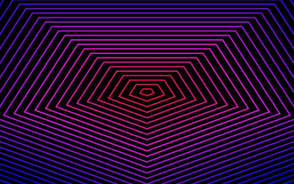
6. Spacing, width and growth
- Ring Spacing (Q): the gap between rings. Wider gaps make bolder, simpler pictures.
- Line Width (W): how thick each ring is drawn. When the lines are wider than the gaps, the rings overlap into solid bands.
- Ring Growth (E): how fast the rings grow outward, and so how often new ones are born. At 0 everything stops growing. Unlike the others, it changes every ring at once.
- Rings (R, in the Master panel): the most rings shown at once. Fewer rings leave an empty space at the edges.
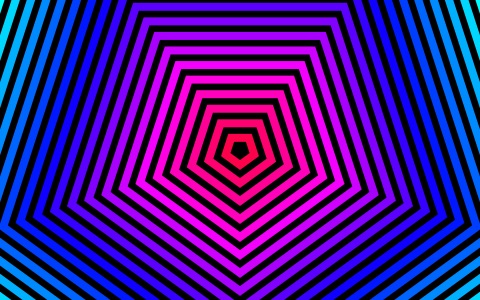
7. Moving the center
Drag on the picture to move the center, and watch the new rings start from where you are while the old ones keep growing from where they were. Image > Origin Center (⌘−) brings it back; Image > Origin Random (⇧⌘=) lets it wander on its own.
Skew Radius (P) shifts each new ring's center a little further, which bends the rings into a tunnel; Skew Angle ([) sets which way. Keep Skew Radius small: 0.1 to 0.3 is plenty.
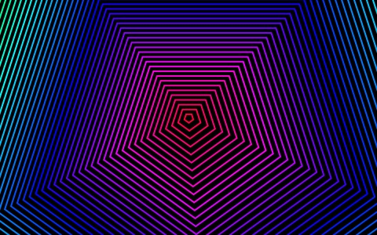
8. Letting it move by itself
Every parameter has its own oscillator, which moves it up and down for you. In the Parameters panel, the columns after each slider set it up: Waveform (the shape of the movement: Sine, Triangle, Square, Random and others), Amplitude (how far it swings either side of the value) and Frequency (how many swings a second). If you don't see those columns, make the panel wider.
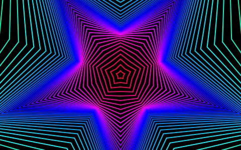
Give a few parameters slow oscillators at different frequencies and the picture never quite repeats. That's how most of the sample patches work. Image > Random Phase (⌘0) starts every oscillator from a random point, for a fresh variation of the same patch.
9. Color
Each ring has a color, which drifts around the color wheel as rings are born.
- Color Speed (A): how quickly the color drifts. At 0 every new ring is the same color.
- Lightness (J) and Saturation (G): from black to white, and from grey to vivid.
- Hue (H, in the Master panel): shifts the colors around the wheel.
- Bk Hue (M) and Bk Lightness (,): the background color. The background is black until you raise Bk Lightness.
- Image > Rotate Hue (⌘8) turns the colors of every ring showing by a quarter turn, and Image > Invert Color (⌘7) makes a color negative.
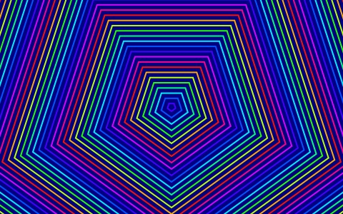
10. Changing every ring at once
The Globals panel has a second copy of the shape parameters: Ring Sides, Star Factor, Pinwheel, Rotate Speed, Aspect Ratio, Skew, the curves and more. A global changes every ring at once, instead of only new ones, and adds to the patch's own value.
11. Drawing styles
The Properties panel and the Image menu switch how the rings are drawn. Each has a key from ⌘1 to ⌘9; try them one at a time.
- Fill (⌘1) colors the space between rings, and Outline (⌘2) draws their edges in the background color.
- XRay (⌘3) draws the rings see-through, so where they cross their colors combine (on Macs with Apple silicon).
- Mirror (⌘4) reflects the picture into four quarters, like a kaleidoscope. It's striking with a moving center or some skew.
- Convex (⌘5) draws the largest rings first, which changes how filled rings cover each other.
- Reverse (⌘6) makes the rings shrink toward the center instead of growing out.
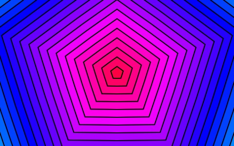
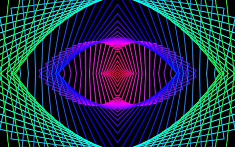
12. The Master controls
The Master panel acts on the whole picture rather than on the rings' shape.
- Speed (S): everything faster or slower, oscillators included.
- Zoom (Z, or a plain swipe over the picture): closer or further.
- Damping (D): how smoothly the center and the zoom follow your moves. Low values glide; high values follow at once.
- Trail (X): makes the rings lag behind the center as it moves, so they stream after it.
- Copies (V) and Spread (N): draw several sets of rings, spread out from the center.
- Fade (F): lets the oldest rings fade away instead of vanishing.
- Canvas (C): how far past the window's edges the rings keep growing before they disappear.
13. Keeping what you made
- File > Save (⌘S) saves your patch, in Documents > Whorld > Patches unless you choose another folder. Saving asks for a name and, if you like, your name as its author.
- To add it to the playlist, open View > Patches (⌥⌘6) and drag it into the Playlist panel. Then save the playlist with File > Playlist > Save Playlist (⌥⌘S).
- File > Export > Image (⌘E) saves the picture as a PNG, and File > Snapshots > Take Snapshot (⌘T) keeps the exact rings showing, to look at or export later at any size.
- File > Movie > Record Movie (⌘R) records what you play, then File > Export > Movie as Video turns it into a video.
14. Where to go next
- Perform: Window > Perform (⌃⌘2) gives the picture most of the window, with the playlist at hand; ⌃⌘1 comes back to Edit. ⇧⌘F puts the picture full screen on a second display or projector while you keep the panels.
- Music: View > Modulation (⌥⌘7) lets sound move the controls, from a microphone, another app or Ableton Link, in time with the beat.
- A controller: View > MIDI Learn (⌥⌘L): click a control, then move a knob on your MIDI controller to connect them. TouchOSC on a phone or tablet works too, with the layout on the Whorld disk image.
- Other apps: View > Syphon > Syphon Output (⇧⌘Y) sends the picture to VJ apps such as Resolume, MadMapper and OBS.
- Your own keys: View > Key Map (⌥⌘9) shows which key moves which control, and lets you change them.
The rest is in the app: Help > Whorld Help covers everything, Help > Tips and Gestures has the shortcuts and gestures that are easy to miss, and Help > Whorld Manual (the original Whorld manual) explains each parameter in depth.